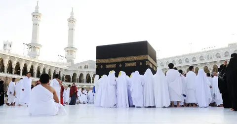

Planning Umrah from the UK is easier when you know what matters most to your group. Your dates, budget, hotel location and flight arrangements all affect the experience. Start by comparing affordable Umrah package options, then look closely at what each one actually includes.
A package that looks inexpensive at first may not be the best fit if the hotel is far from the Haram or the flight schedule is difficult. Equally, a higher price does not automatically mean that every part of the trip will suit your needs. A careful comparison helps you focus on value, not just the headline figure.
This guide covers the practical decisions to make before booking, from choosing a departure airport to preparing documents and planning for family members.
01Compare Umrah Departures from London
London is a useful departure point for many UK pilgrims, but the right flight depends on your dates, airline options and the journey to the airport. If you live outside the capital, include the cost and time of reaching the airport when comparing departures.
Review the available Umrah packages from London alongside your preferred travel dates. The London package page presents different hotel categories and stay lengths. Check the live itinerary carefully because flight arrangements may depend on availability.
Before choosing a departure, compare the total journey time, baggage allowance, stopovers and arrival airport in Saudi Arabia. A direct flight may be more convenient for some families, while a connecting service may suit travellers whose dates are flexible.
Compare the same dates and room occupancy across different offers. This gives you a fairer picture of the actual cost and the services included.
02Build a Budget for the Whole Journey
Set a comfortable spending limit before you start comparing packages. Then list the main costs: flights, hotels, transfers, meals, insurance and personal spending. This helps you avoid using the entire budget on the package price alone.
Ask whether the quoted price is per person and what room sharing it assumes. Twin, triple and quad occupancy can change the price per traveller. Check whether children have a different rate and whether an extra bed is available.
Keep a reserve for meals that are not included, local transport, additional baggage or unexpected expenses. If a package has optional services, ask for their prices in advance so you can make a realistic comparison.
03Understand Exactly What the Package Includes
Package descriptions can use similar wording while offering different arrangements. Ask for a written itinerary and check each service before paying. Do not assume that a service is included unless it appears in the booking details.
Useful items to confirm include:
- Return flights, airline, baggage allowance and flight times.
- Hotel names and room arrangements in both cities.
- Visa assistance and any applicable government or processing charges.
- Airport transfers and transport between Makkah and Madinah.
- Meals, local tours or other optional services.
- Deposit amount, final payment date and cancellation terms.
If anything is unclear, ask the travel company to explain it in writing. Keep the response with your invoice and booking confirmation.
04Choose Hotels for Location as Well as Rating
Hotel star ratings can help with a first comparison, but location often has a direct effect on daily comfort. A hotel that requires a long walk or shuttle journey may be less suitable for older pilgrims or families with young children.
In Makkah, check the route to Masjid al-Haram, not only the distance shown on a map. In Madinah, check how easy it is to reach Masjid an-Nabawi from the hotel. Ask whether the route involves slopes, busy roads or transport arrangements.
Confirm the hotel name, room type, bed arrangement and available facilities. If the provider reserves the right to change the hotel, ask what standard and location the alternative must meet.
05Decide How Long to Stay in Each City
A seven-night trip may suit people with limited annual leave, while a ten-night or fourteen-night stay gives more time to settle in and rest. The right length depends on your budget, schedule and personal priorities.
Look at how the nights are divided between Makkah and Madinah. Some pilgrims prefer extra time near Masjid al-Haram, while others want a more balanced stay. Also allow for the journey between the two cities so that travel does not make the schedule feel rushed.
For a first visit, a little flexibility can be valuable. Avoid filling every day with activities; leave time for prayer, meals and rest.
06Check Flights and Ground Transfers
Check whether your flight is direct or includes a stopover. Compare the full journey time, departure and arrival times, baggage rules and any connection requirements. A lower fare may involve a longer journey or less convenient timing.
Confirm whether you will arrive in Jeddah or Madinah and how you will reach your first hotel. If your itinerary includes both cities, ask how the intercity transfer is arranged and whether it is part of the quoted price.
Keep transfer instructions and the hotel address somewhere easy to find. This is particularly helpful when arriving after a long flight or travelling with a group.
07Make the Journey Easier for Families
When travelling with children or older relatives, think about comfort at every stage. Choose flight times that work for your group where possible, confirm suitable room arrangements and ask about airport assistance if anyone needs it.
Pack essential medicines in hand luggage and keep important documents accessible. Agree on a meeting point in busy areas, and make sure everyone has the hotel name and a contact number.
Plan a realistic daily routine. Rest breaks can make a big difference, especially after arrival and during days with more walking.
08Organise Documents Before Departure
Check your passport details and expiry date well before travelling. Saudi entry and Umrah requirements can change, so confirm the current rules for your nationality and circumstances through official guidance before departure.
Keep digital and printed copies of your passport details, flight itinerary, hotel confirmation and emergency contacts. Consider travel insurance and read the policy to understand its medical, cancellation and disruption cover.
For UK flight-inclusive bookings, check whether ATOL protection applies. Where it does, request an ATOL Certificate and confirm that the services you have booked are listed on it.
09Choose a Travel Provider That Gives Clear Answers
A travel provider should explain the itinerary, hotel arrangements, payment schedule and cancellation terms in clear language. Check its contact details and read customer feedback, but also make sure important promises appear in your written booking documents.
You can review the information and travel options from Hajj Umrah Travels as part of your research. As with any travel provider, compare the actual itinerary and ask for confirmation of the details that matter to your group.
Do not feel pressured to pay before you understand the booking. Keep receipts and copies of important messages so you can refer to them if a question comes up later.
10Use a Simple Pre-Departure Checklist
Before leaving home, take a final look at the arrangements:
- Reconfirm flight times and baggage allowance.
- Check hotel names, room details and arrival instructions.
- Prepare passports and required travel documents.
- Save transfer details and emergency contact numbers.
- Pack suitable clothing, comfortable footwear and medicines.
- Keep some money available for personal expenses.
- Review the basic steps of Umrah before travelling.
Having these details ready can reduce last-minute stress and help you begin the journey with greater confidence.
Final Thoughts
A comfortable Umrah journey begins with clear information and realistic planning. Compare the complete package, check hotel locations, understand the flight arrangements and consider the needs of everyone travelling with you. The most suitable option is the one that fits your budget and gives you the arrangements you need, allowing you to focus on your time in Makkah and Madinah.